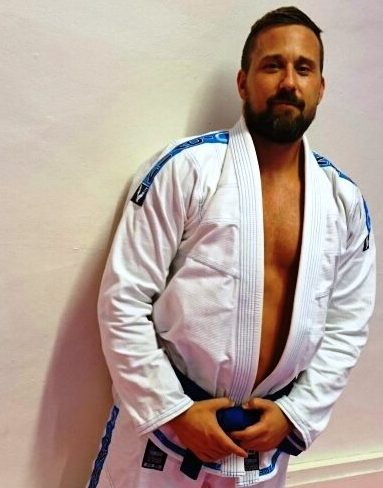

Innlegg
Hønefoss Brasiliansk jiu-jitsu klubb

En ny kampsport klubb startes opp i disse dager i Hønefoss. Hønefoss Brasiliansk jiu-jitsu klubb
Kjell-Marius Jøntvedt som er medlem i Ringerike TKD klubb har blått belte i BJJ og har tidligere trent på Frontline Academy Majorstuen i 3 år. Han har også erfaring fra MMA, men ønsker å fokusere på BJJ fremover.
Brasiliansk jiu-jitsu har sine røtter fra Judo og tradisjonell Ju Jutsu. Hovedfokuset i BJJ er nede på bakken, grep, posisjoner, timing, kontrollgrep og strategi. Man kan altså stanse en angriper uten å slå et eneste slag! Uansett om det er i en selvforsvarssituasjon eller i en MMA-kamp er det særdeles viktig å være i stand til å avslutte eller kontrollere en kamp på bakken, noe BJJ tilbyr. Det er en sport som passer for alle.
Treningene vil foregå på en, eller flere av følgende dager: onsdag/fredag/lørdag/søndag.
Oppstarten av klubben er et samarbeid mellom Kjell-Marius som vil være instruktøren i klubben. Og Ringerike TKD klubb som er med å tilrettelegger med lokaler og annet. Vi håper og få til et godt samarbeid som vil gi våre medlemmer og andre som har lyst til å trene BJJ et godt tilbud :).
Medlemmer i Ringerike TKD klubb fra 16 år og oppover kan delta gratis på disse treningene. For å få info om treningstider må du finne gruppen Hønefoss Brasiliansk Jiu-jitsu på Facebook og be om å bli medlem av gruppen.
Er du ikke medlem av Ringerike TKD klubb, men har lyst til å trene BJJ så ta kontakt med Kjell-Marius via e-post: jontvedt.marius79@gmail.com